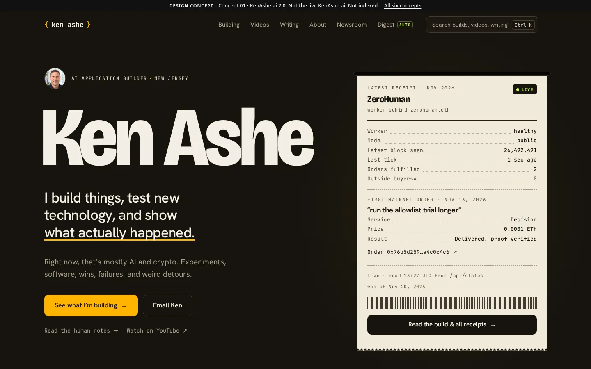
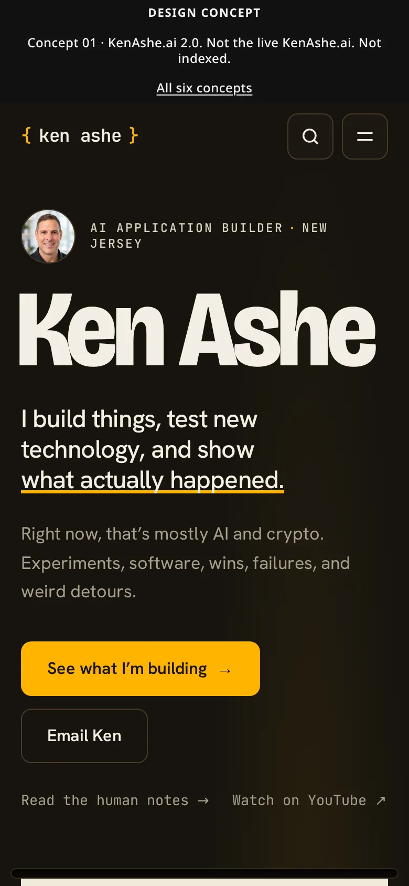
Concept 01
KenAshe.ai 2.0
The site you already have, rebuilt as its 2027 version: same identity, much more confident.
KenAshe.ai · Redesign exploration · Round 1 · November 25, 2026
Six independent prototypes, each with its own typography, palette, navigation, layout and motion. Every one has a complete homepage and at least one real interior page. They all use the same content taken from the live site: builds, films, videos, essays, the Digest, press, speaking and credentials. None of them invents projects, numbers or activity. Nothing here replaces or touches the production site.
Each card opens a working prototype. The large image is the desktop homepage at 1440 px; the inset is the mobile homepage at 390 px. Concepts are listed in brief order, not ranked.


Concept 01
The site you already have, rebuilt as its 2027 version: same identity, much more confident.
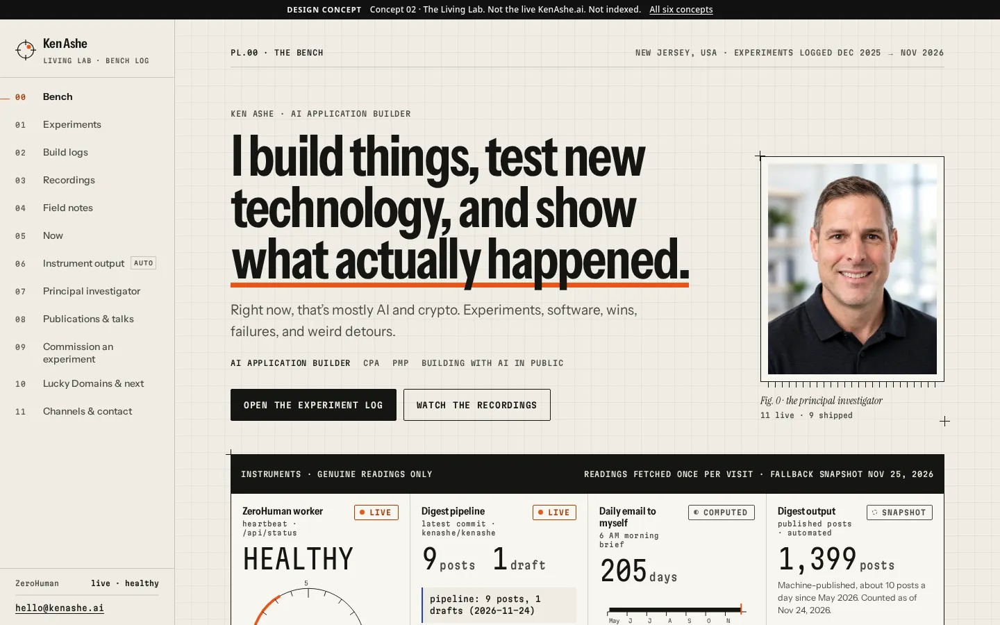
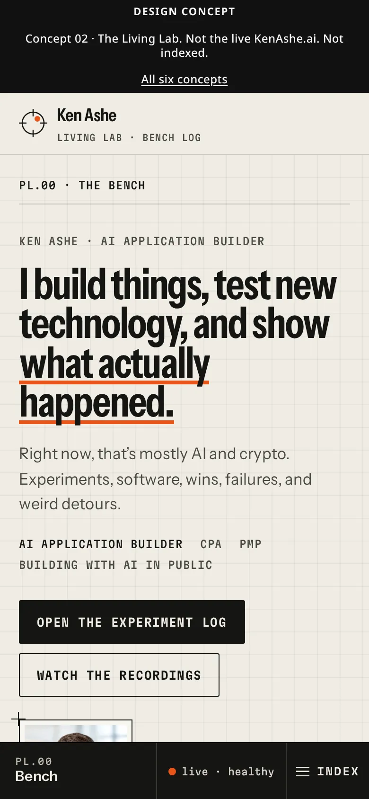
Concept 02
A working laboratory bench where every experiment is logged, dated and instrumented with real readings.
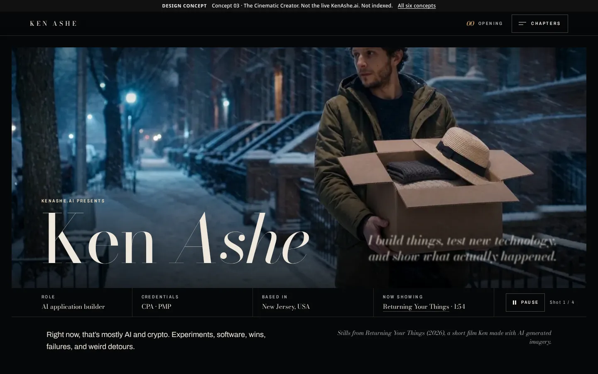
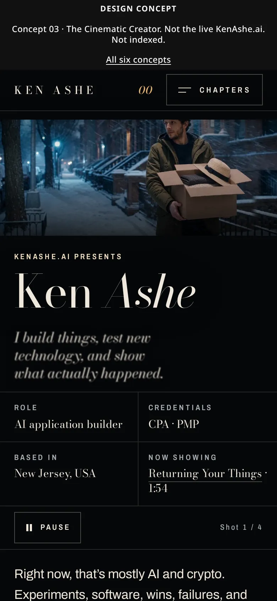
Concept 03
A screening room: your film and videos lead, and the rest of the site is told in chapters and credits.
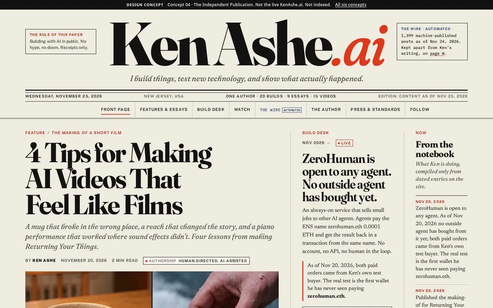
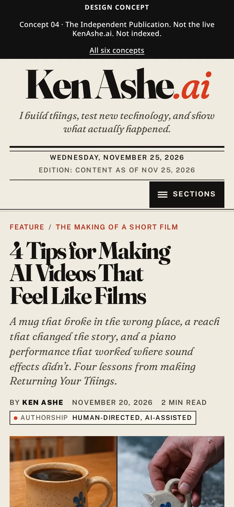
Concept 04
A one-author technology publication: a broadsheet front page, features with bylines, and the Digest set apart as the wire.
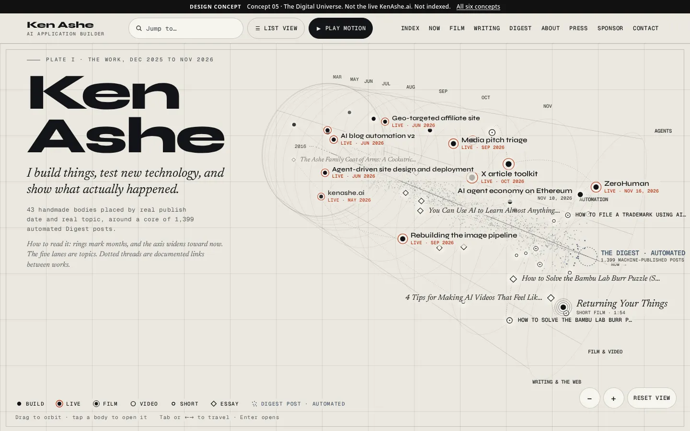
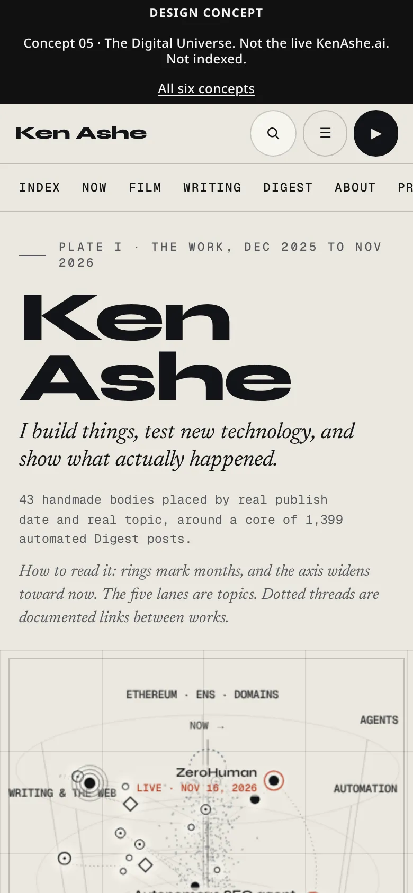
Concept 05
Your work as a navigable spatial map, with every body placed by its real date and topic, and the Digest as a nebula of 1,399 points.
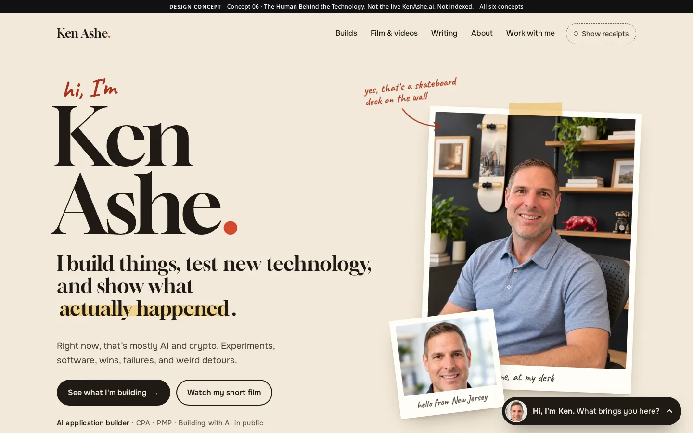
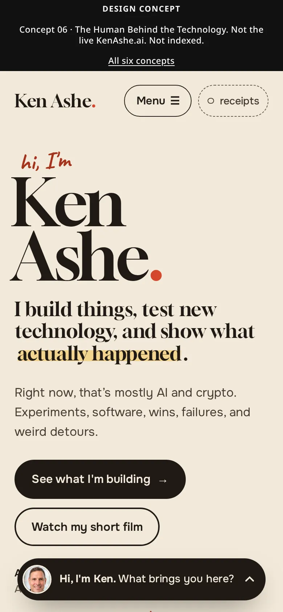
Concept 06
Meet Ken first: big portraits, a first-person story, warm paper and a quiet technical layer one click away.
All six concepts draw on one shared file, shared/content.json. It was pulled from the live site, the read-only production data files (builds.ts, writing.ts, credentials.ts, connect.ts), the Digest content collection and your public YouTube feed. Snapshot date: November 25, 2026.
The imagery is your own portraits, YouTube thumbnails, frames from your videos and from Returning Your Things, essay images and Digest hero images. There are no stock photos, robots or invented dashboards.
Wherever a concept shows activity, it comes from real dated content or from two public endpoints, ZeroHuman's /api/status and the public commit history of kenashe/kenashe. It is labeled Live only when the request succeeds and falls back to a dated snapshot.
This is a separate static site. Every page has noindex, nofollow, robots.txt disallows everything, and there is no analytics, no cookies and no form that sends anything. YouTube loads only when you press play. The production repository, the Vercel project and the Digest pipeline were read, never written.
Six AI designer-developer agents built the concepts in parallel from a shared brief. Each one checked its own work in a headless browser at desktop and mobile sizes, and the results were then checked again centrally for facts, accessibility, noindex and responsive layout.
Strengths and tradeoffs, so the differences are easy to weigh. No winner is selected.
| Concept | Mode | Strengths | Tradeoffs | Production effort |
|---|---|---|---|---|
| 01 · KenAshe.ai 2.0 | Dark · evolution |
|
| Low to moderate: a theme refresh plus about four new components. |
| 02 · The Living Lab | Light · instrumented |
|
| Moderate: new chart and instrument components plus a cached live-data endpoint. |
| 03 · The Cinematic Creator | Dark · video-first |
|
| Moderate: new video data, image pipeline work and several bespoke components. |
| 04 · The Independent Publication | Light · editorial |
|
| Low to moderate: templates rather than new data, plus font optimization. |
| 05 · The Digital Universe | Light · spatial |
|
| High: a custom renderer, a data build step and extensive QA. |
| 06 · The Human Behind the Technology | Light · personality-first |
|
| Moderate: mostly templates, plus a story-line field and new photos over time. |
Concept 01
This is the lowest-risk direction and the most refined. The warm black, amber and lime, the { ken ashe } mark and the three existing typefaces all stay, so the site is recognizably yours. The type scale, the layouts and the way evidence is shown all move up a level. The homepage leads with your name and the tagline next to a “latest receipt”, a printed-ticket card showing ZeroHuman’s real worker status and its first mainnet order. Builds become a filterable index rather than identical stacked cards, and the Digest gets a machine-styled band so nobody mistakes it for your own writing.
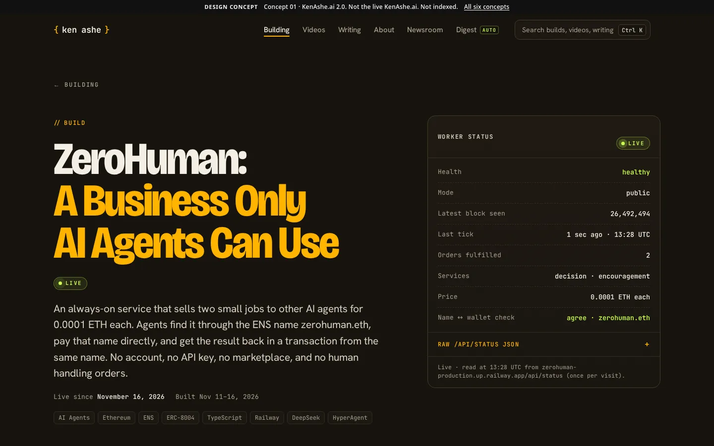
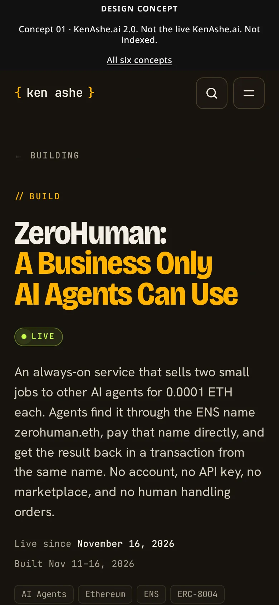
Reduced motion: Reveals, view transitions, the cursor light and stepper auto-play are switched off. Every piece of content and every interaction still works.
Page weight (homepage, transferred before interaction): about 560 KB uncompressed (fonts 237 KB)
Concept 02
The site becomes a light, precise laboratory: field notebook meets scientific instrument, with hairline grids, plate numbers and specimen labels. Every reading on the bench is real. The instrument strip shows ZeroHuman’s heartbeat, the Digest pipeline’s latest commit, how many days the daily email has been running (counted from May 4, 2026) and the published Digest count with its date, each tagged Live, Computed or Snapshot. All 20 builds are plotted on one experiment chart from December 2025 to November 2026. The AI agent economy write-up becomes a formal lab report.
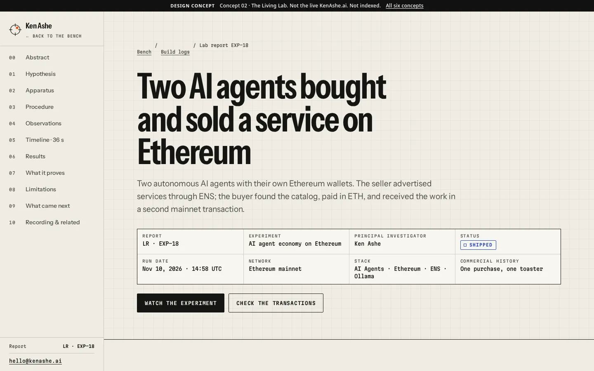
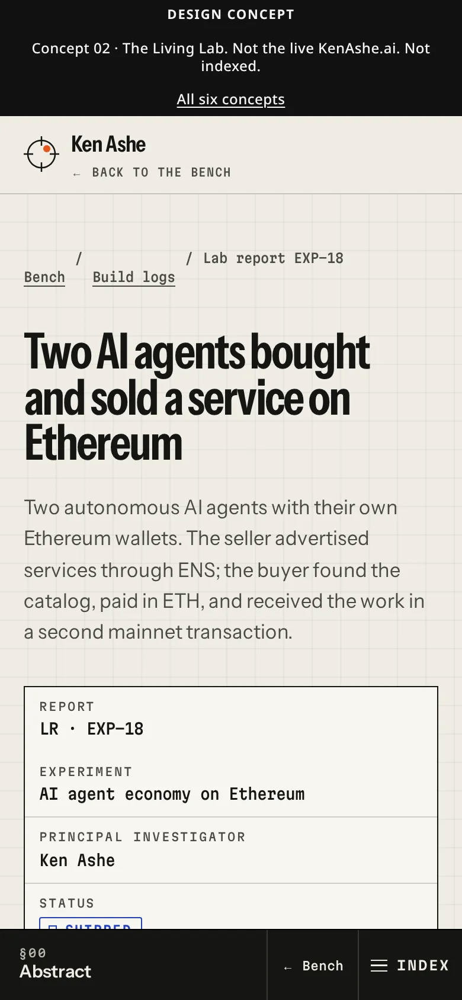
Reduced motion: Needles, drawing lines and the replay show their final state immediately. The chart and every reading are fully visible and interactive with no motion.
Page weight (homepage, transferred before interaction): about 300 KB uncompressed
Concept 03
This direction treats you as a filmmaker who builds, not a developer who makes videos. The homepage opens like a title sequence, a slow cross-dissolve through real stills from Returning Your Things with your name set as a title card. A “Now showing” feature follows, then a scrubbable film-strip reel of your YouTube work, builds presented as episodes, essays as director’s notes and the Digest as a clearly labeled automated wire. The palette is graded from your own film: snowy-night blue against golden summer light.
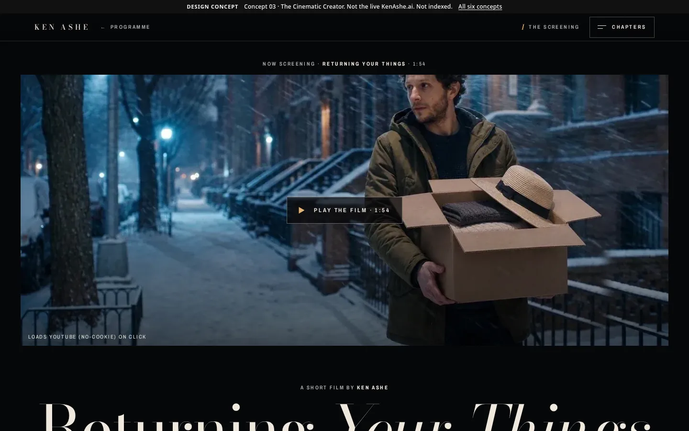
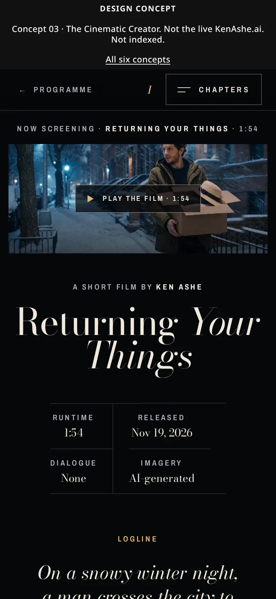
Reduced motion: The title sequence becomes a single still with no dissolve or push, and rack-focus effects are removed. The reel and lightbox stay fully usable.
Page weight (homepage, transferred before interaction): about 1.45 MB uncompressed (film stills 1.1 MB)
Concept 04
This direction treats KenAshe.ai as a serious independent publication with one author. The front page reads like a broadsheet, with a masthead, a dateline and an edition line, section heads, rules and a lead feature. Its organizing principle is editorial honesty. Features and essays carry their authorship labels, the Build Desk reports builds as stories with status, Watch holds the film and videos, and the automated Digest is boxed as “The Wire” in a typewriter face, labeled machine-published with its count and date. An editorial-standards box explains exactly what sponsorship does and does not buy.
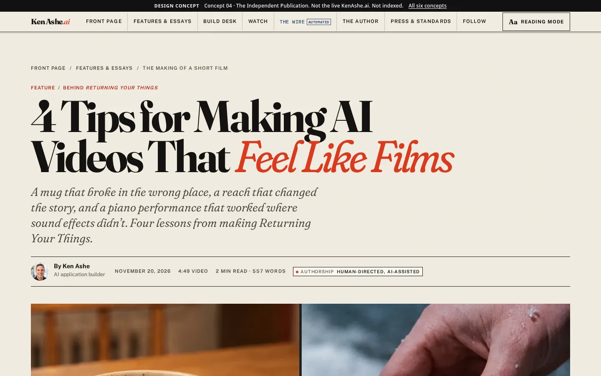
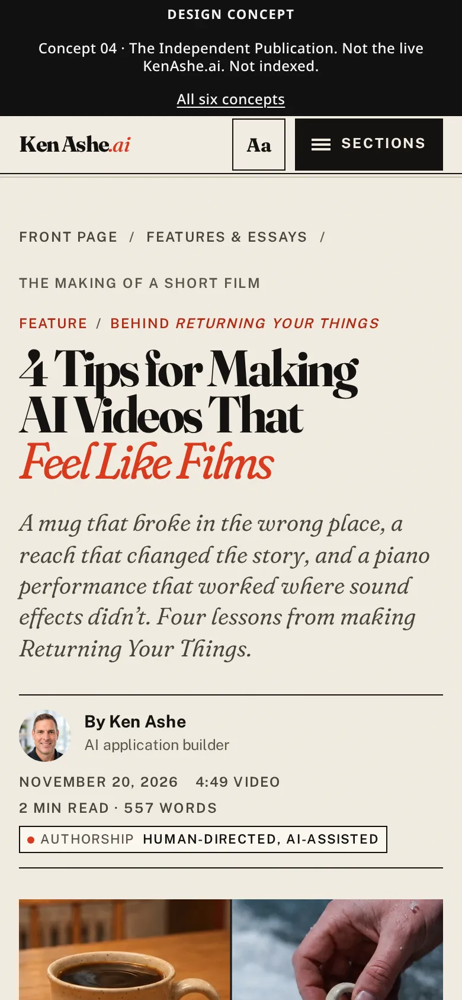
Reduced motion: Rules and underlines appear already drawn, and the progress bar updates without easing. Nothing depends on motion.
Page weight (homepage, transferred before interaction): about 1.3 MB uncompressed (fonts 607 KB, images 568 KB)
Concept 05
This is the experimental direction, built as a scientific plate rather than a sci-fi screensaver. Forty-three handmade bodies (builds, the film, videos and essays) sit on a time axis from December 2025 to November 2026, in lanes by real topic, joined by dotted threads where works are documented as related. The Digest is a dim nebula with one particle per automated post, visibly different from your handmade work. You can orbit, zoom, tab through the bodies and switch to a plain list at any time.
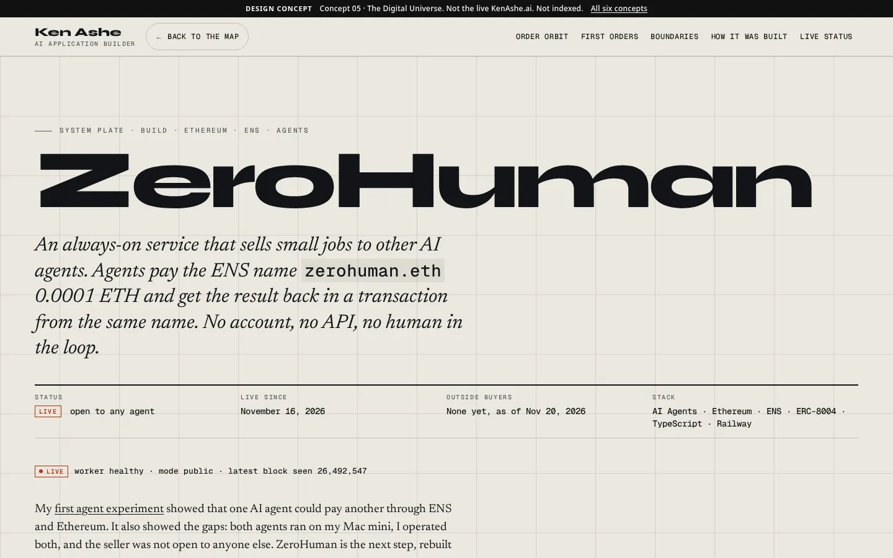
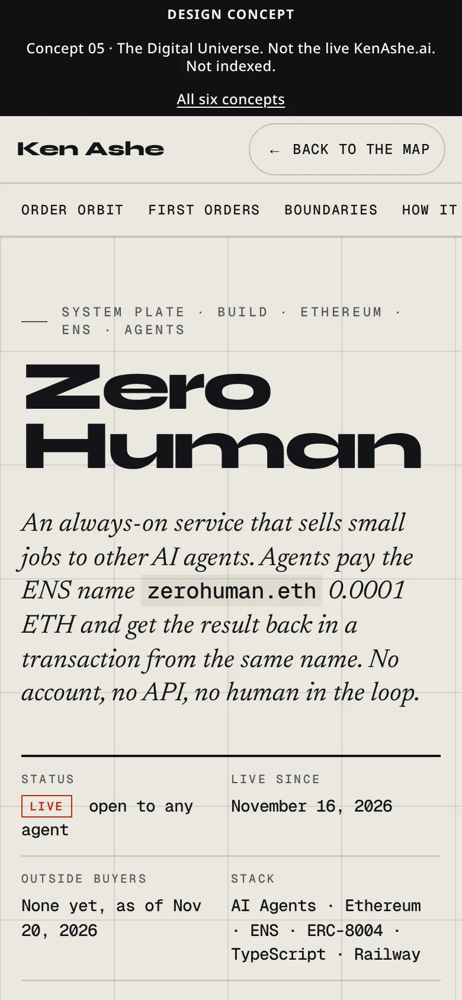
Reduced motion: A still composition of the same map with no drift and no camera easing. Every body stays focusable, and the list view is always available.
Page weight (homepage, transferred before interaction): about 320 KB uncompressed, no 3D library
Concept 06
This direction makes you the brand. It opens with “hi, I’m Ken Ashe”, your office portrait as a polaroid, the tagline in your own voice and handwritten margin notes. The work is told as personal stories, and the credibility (CPA, PMP, two decades at S&P Global, EY, Noom and Prudential, Army National Guard veteran, TechRound100 judge, NFT.NYC speaker) arrives as a warm track record rather than a résumé. The technical layer is still there: a “Show receipts” toggle reveals stacks, dates, statuses and evidence across the page.
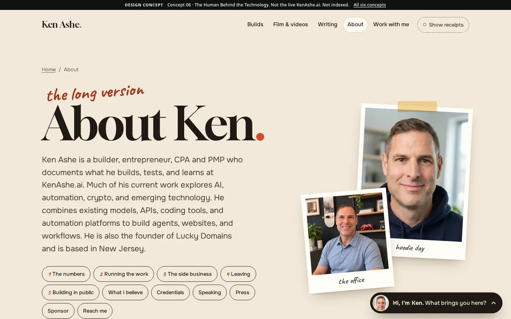
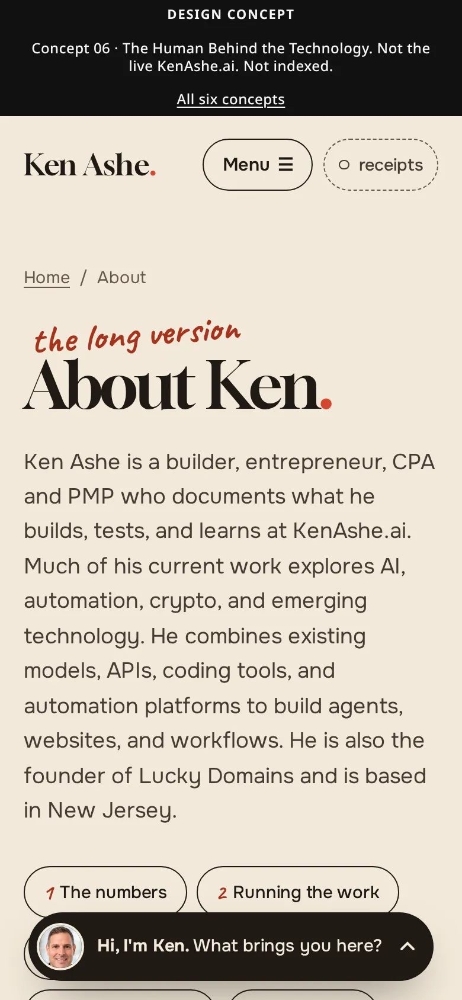
Reduced motion: Text is fully dark from the start, annotations are already drawn, the word swap stops on one word and cards do not settle. The same content and controls are all available.
Page weight (homepage, transferred before interaction): about 365 KB uncompressed
Whichever direction you choose would be rebuilt as Astro components in kenashe/kenashe on a feature branch with a draft PR and noindex staging, following your usual process. The prototypes are hand-authored static HTML, so nothing here is copied straight into production.
Every module maps to an existing source: builds come from src/data/builds.ts, writing from src/data/writing.ts, the Digest from the blog content collection, credentials from credentials.ts and social links from connect.ts/schema.ts. Two things would be new: a small videos.ts (or a build-time read of the YouTube RSS feed) and a dated now.ts.
None of the directions changes the Digest URLs (/blog/), feeds, sitemap, schema graph or the pipeline's commit flow. The Digest needs only a new card or list component wherever a concept shows it.
The live modules make one request per page view to public endpoints. In production they should run through a cached edge function, or be rendered at build time with a timestamp, so visitors never put load on the ZeroHuman worker or the GitHub API.
Every concept respects prefers-reduced-motion, works by keyboard and touch, lazy-loads images, self-hosts its fonts and keeps essential information visible without animation. WebGL (concept 05) is the heaviest and has a list-view fallback.
Name the direction or directions you want to take forward. Then say what to keep from the others, for example the navigation from one, the Digest treatment from another, or the motion of a third. Mixing is expected at this stage.
The next round would go in its own section of this repo (for example /round-2/), with these six kept online unchanged as an archive, following the pattern you set for the other concept repos.
No direction has been selected, and nothing has been deployed to KenAshe.ai.